Lecture 3 · 人工智能产业实践 · MBA / EMBA
数据科学与 AI 1.0
从一封垃圾邮件开始：
IN THIS LECTURE
PART 1 Data Science 数据科学与数据科学家
PART 2 The Process 一般过程 · 垃圾邮件案例
PART 3 Community & Reading 数据科学社区与延伸阅读
常象宇 Xiangyu Chang
西安交通大学 管理学院
xiangyuchang@xjtu.edu.cn
your > 0.5
⇒ 判为垃圾邮件 正常邮件 垃圾邮件 75.1%
一条规则的
准确率 data ⇢ rule ⇢ value
LECTURE 3 · 人工智能产业实践
目录 Outline
PART 1
Data Science
1.1 什么是数据科学1.2 谁是数据科学家1.3 商学院为什么需要它
数据科学与数据科学家
PART 2
The Process
2.1 十二步与 CRISP-DM2.2 垃圾邮件：手把手走一遍2.3 AI 4.0 来做这件事
一般过程 · 案例
PART 3
Community & Reading
3.1 工具演变3.2 统计之都与 R 会议3.3 延伸阅读
数据科学社区与延伸阅读
提示 按 O 键可随时打开全部页面目录，按 S 键打开侧边导航；← → 翻页。 参考 原 PPT P2 / P45
LECTURE 3 · 课程位置
Data → AI → Business Value
本讲站在 Data 一端：先学会“把一个业务问题变成数据问题”。
L3 · 本讲
数据科学与 AI 1.0 一般过程 + 手写规则
本讲你将带走
01 概念 数据科学 / 数据科学家 到底是什么，不是什么
02 流程 12 步一般过程，以及每一步 AI 现在能做多少
03 判断 一个“准确率 75%”的规则，究竟值多少钱
参考 原 PPT P63、课程规划（L1–L8）
LECTURE 3 · 人工智能产业实践
01
PART 1
Data Science
数据科学是什么，数据科学家做什么，商学院为什么要有它
1.1 数据挖掘 → 数据科学
1.2 数据科学家：岗位、学界、社区
1.3 人才培养：高校与商学院
1.4 数据科学家的思维
PART 1 · 1.1 数据挖掘
数据挖掘：从数据里挖出模式
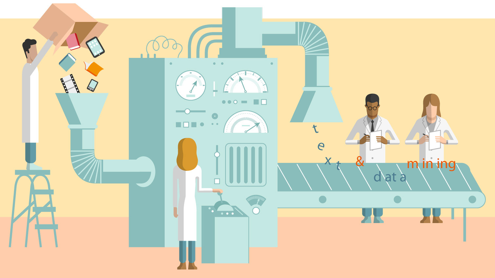
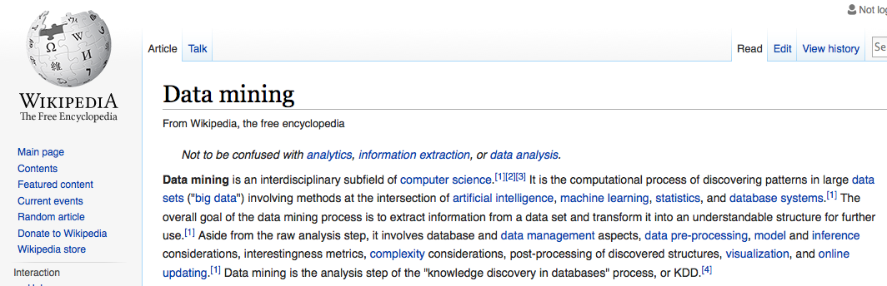
Wikipedia · Data mining 是什么 计算机科学、统计学、数据库交叉的子领域
做什么 从大数据集中发现模式 ，并转成可理解的结构
在哪一步 KDD（数据库知识发现）流程中的分析步骤
参考 原 PPT P3；Wikipedia “Data mining”
PART 1 · 1.1 数据科学
DATA SCIENCE
从数据中提取可推广 知识的研究，科学 ”。
“…the study of the generalizable extraction of knowledge from data, yet the key word is science.”
点击右侧圆圈
数据科学 = 三种能力的交集 数学与统计、计算机与数据工程、领域与业务知识——缺一不可。
数学 · 统计 计算机 · 工程 领域 · 业务 机器学习
传统科研
危险区
数据 科学
参考 原 PPT P4（Wikipedia “Data science”）；Venn 思路 Drew Conway 2010 ⚠ 为课堂简化
PART 1 · 1.2 数据科学家
数据科学家：没有超人，只有团队
通常只精通其中一到两个 领域，因此要在团队 里工作。
“…a data scientist will most likely be expert in only one or at most two of these areas…works as part of a team.”
试一试：点击成员，看个人的“能力轮廓”；再点团队 ，看缺口如何被补上。
成员 A 成员 B 成员 C 团队
示意数据，非真实评估
参考 原 PPT P5（Wikipedia “Data scientist”）
PART 1 · 1.2 岗位
招聘启事里的数据科学家
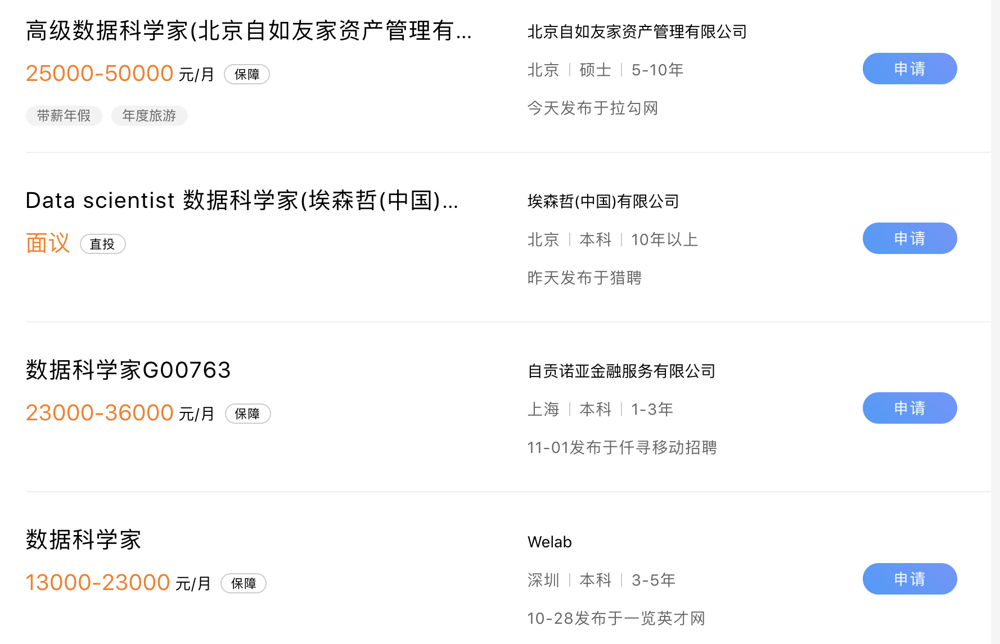
当年的招聘列表：13k–50k 元/月，硕士、5–10 年经验的更贵 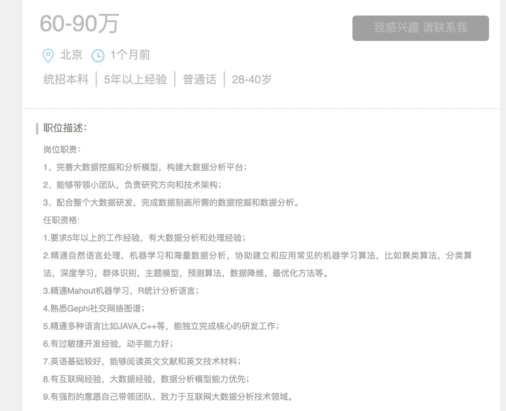
60–90 万/年：NLP · 机器学习 · R · Java/C++ · 带团队
要求的共同点
数学 · 统计 编程 · 工程 机器学习 业务理解
岗位 ≠ 一项技能，而是一组能力的组合
参考 原 PPT P6–P7、P12–P13（招聘网站截图，早期课件材料）
PART 1 · 1.2 岗位 · 2026 更新
增长最快 vs 最先被替代
美国就业预测 2024–34，变化百分比（BLS）
82,500
数据科学家岗位净增（2024–34 预测）
官方手册最新口径：2025–35 年增长 35% 。生成式 AI 被认为是需求来源 之一，而非单纯的替代者。
参考 R1 BLS · The Economics Daily 2026-07-16；R2 BLS Occupational Outlook Handbook（⚠ 美国数据，仅作趋势参照）
PART 1 · 1.2 社区
Kaggle：数据科学的竞技场 kaggle.com
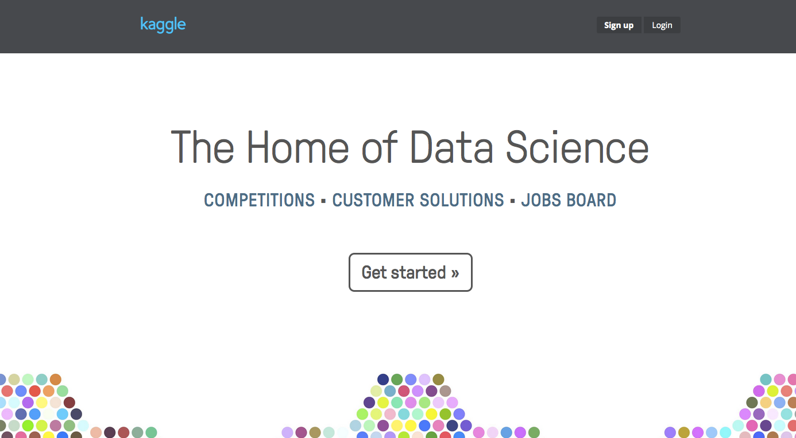
早期首页 · Home of Data Science 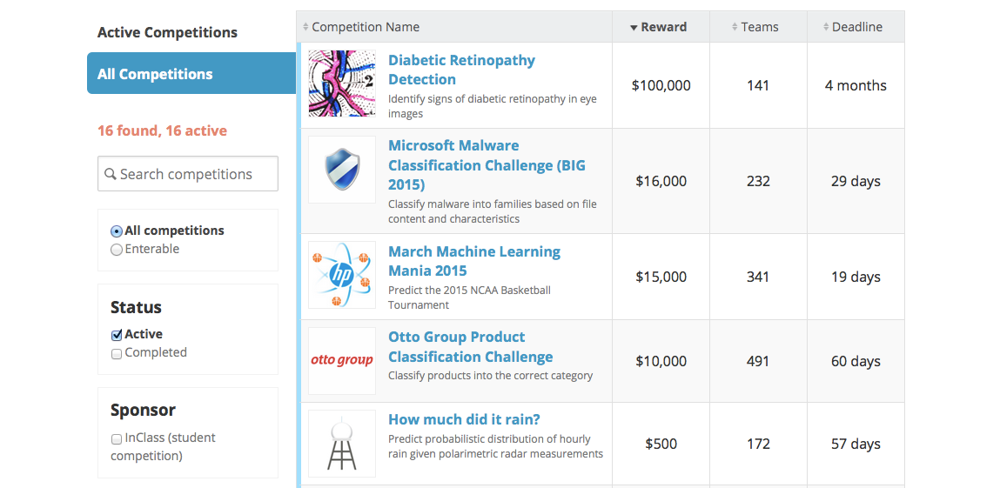
竞赛悬赏（约 2015）
2017.03.08 · GOOGLE CLOUD NEXT '17
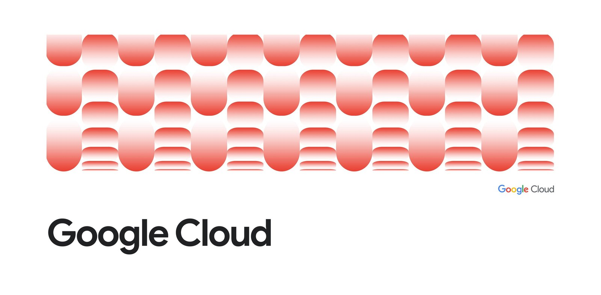
收购新闻
Kaggle 加入 Google Cloud Fei-Fei Li 在 Next '17 宣布：Kaggle 并入 Google Cloud。当时社区已超 80 万 数据科学家与 ML 爱好者；竞赛 + 公开数据集 + 云平台打通 。
此后 Kaggle 仍是独立品牌；2026 年 AI Agent 在 MLE-bench 等榜单上延续“竞技场”逻辑，见 Part 2。
参考 原 PPT P10–P11；R12 Google Cloud Blog（2017-03-08）Welcome Kaggle to Google Cloud；TechCrunch 同期报道（⚠ 未披露交易金额）
PART 1 · 1.3 人才培养
高校：几年之内，从 3 所到几十所
2016 · 第一批
北京大学、对外经济贸易大学、中南大学
2017 · 第二批
中国人民大学、复旦大学、北京邮电大学、电子科技大学……
“大数据管理与应用”（管理学门类）的主要方向
商务数据分析 商务智能 电子健康 大数据金融 数据挖掘 大数据管理与治理
参考 原 PPT P15、P18–P19（教育部备案名单与媒体解读）；⚠ 第一/二批年份为公开信息补注，请以教育部公告为准
PART 1 · 1.3 商学院
Why Data Science in B-School
西安交大 × SKEMA · 创业与创新管理学硕士（大数据与人工智能管理） 北京大学光华管理学院 · 商业分析硕士项目（BA）
ACADEMIC WORLD
研究范式变化：数据驱动 的管理研究
INDUSTRIAL APPLICATIONS
企业缺的是能定义问题、解释结果 的人
B-SCHOOL
商学院的位置：Venn 图里的“领域 · 业务”
参考 原 PPT P17、P20–P21
PART 1 · 1.4 思维
如何具有数据科学家的思维
01
先问问题，再找数据 数据科学从定义问题 开始，而不是从算法开始
02
对数据保持怀疑 数据从哪来？谁没被记录？结论能推广吗
03
会与工具和 AI 协作 你不必亲手写每行代码，但必须能判断结果对不对
参考 原 PPT P22
LECTURE 3 · 人工智能产业实践
02
PART 2
The Process
数据科学的一般过程：用一封垃圾邮件，走完十二步
2.1 十二步与 CRISP-DM
2.2 案例：垃圾邮件分类
2.3 AI 4.0 来做这件事
2.4 2026：AI 当数据科学家？
PART 2 · 2.1 一般过程
问题与数据 · 1–5 分析与建模 · 6–8 检验与交付 · 9–12
参考 原 PPT P23；“AI 现状”为课堂判断，依据见 2.4 节 ⚠ 十二步流程为经典教材式总结
PART 2 · 2.1 CRISP-DM
占比为行业经验区间，合计超过 100%，只用来说明：数据准备最耗时 。
参考 原 PPT P24–P25（CRISP-DM 循环与各阶段时间占比）
PART 2 · 垃圾邮件案例
Spam Example
我们是否可以自动识别
谁受损 用户的时间、注意力与安全
怎么衡量 拦住多少垃圾，又误伤多少正常邮件
值不值得做 这是业务问题 ，不是技术问题
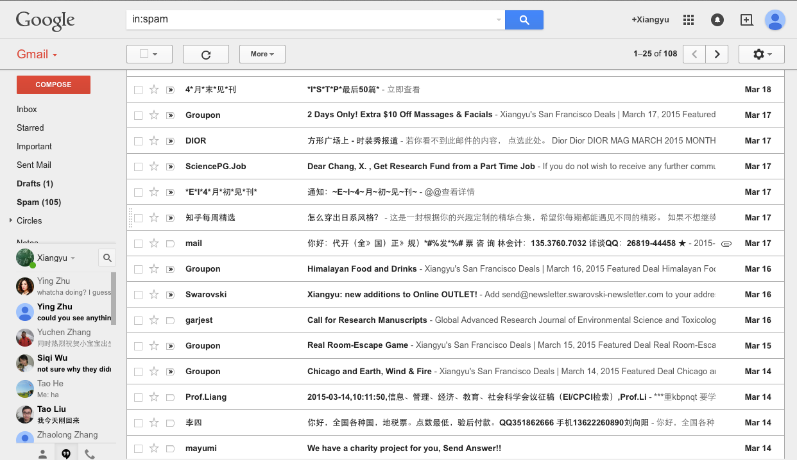
某邮箱的“垃圾邮件”文件夹（原课件截图）
参考 原 PPT P26–P27
PART 2 · 垃圾邮件案例
好问题 = 可以被计算 的问题
→
更确切的问题
如何利用垃圾邮件的特征 ，定义数量化的方法 来识别垃圾邮件？
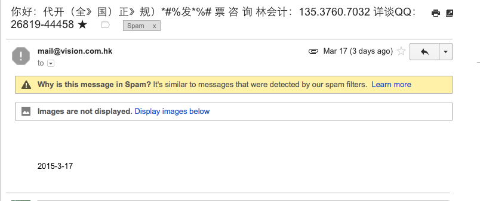
一封真实垃圾邮件：“代开发票 *#%发*%# 票 咨 询…” ⇒
特征（数字）· 例
your = 0.96
⇒
⇒
参考 原 PPT P28–P31；示例特征取自数据集第 1 封邮件（your=0.96，“!”=0.778，大写均长=3.756）
PART 2 · 垃圾邮件案例
理想的数据，永远不是 你拿到的数据
STEP 2 · 理想数据集
· 来自很多用户、很多年份 的邮件 · 每封都有可靠的标签 · 能覆盖新型垃圾邮件
STEP 3 · 能拿到的数据
· 一家实验室的一个邮箱 （1999 年前后） · 已经人工标注 · 公开可下载：UCI Spambase / kernlab::spam
参考 R11 UCI Spambase（Hopkins, Reeber, Forman, Suermondt，HP Labs，1999）；原 PPT P29–P31
PART 2 · 垃圾邮件案例
两行代码拿到数据，清洗
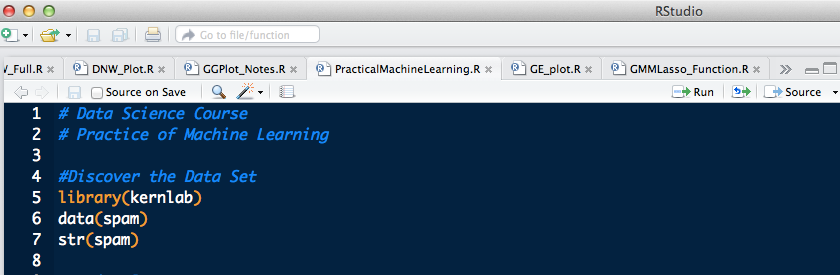
R：library(kernlab); data(spam); str(spam) 清洗时要问
缺失值 重复记录 异常值 编码 / 单位 标签错误
这份数据长什么样（58 列）
48 个词频 ：make、address、free、your…
这份数据已清洗好；现实中，数据准备常占 50–70% 的时间 。
参考 原 PPT P32–P33；R11 UCI Spambase 数据说明
PART 2 · 垃圾邮件案例
垃圾邮件说话的方式 不一样
■ 垃圾邮件 ■ 正常邮件 平均出现频率（%），每行各自缩放
⚠ 数据有“出身”
george、hp 是谁？ 数据来自 HP 实验室一位名叫 George 的员工 的邮箱。这些词在他的正常邮件里随处可见。
管理含义
换成你的邮箱 ，“出现 george = 正常”的规律就不成立了。数据怎么来的，决定结论能推到哪里。
参考 R11 UCI Spambase；统计为本讲在全部 4601 封邮件上的计算（数据说明文档亦提示 george / hp 为收件人个人特征）
PART 2 · 垃圾邮件案例 · 动手
数据 全部 4601 封真实邮件（UCI Spambase）。试试把 your 的阈值放在 0.5：准确率 75.1%，对应原 PPT 的 3457 / 4601。 参考 原 PPT P35–P36
PART 2 · 垃圾邮件案例 · AI 1.0
手写规则 = AI 1.0
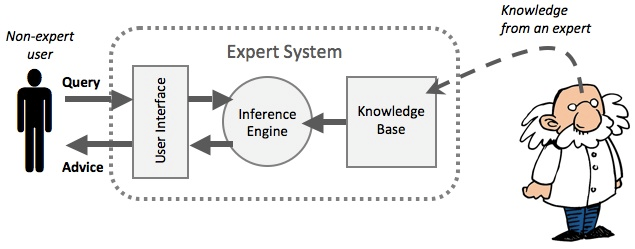
基于规则的专家系统：知识库 + 推理机 + 用户界面
知识库 if your > 0.5 ⇒ spam
推理机 对每封邮件逐条套用规则
知识来源 人看图后手写 ——不是机器学出来的
准确率对比（全部 4601 封）
关键：参照系
75% 听上去不错，但什么都不做就有 60.6% 。价值 = 相对基准线的提升。
下一步：让机器自己找规则 → L4、L5（AI 2.0）。
参考 原 PPT P44（AI 1.0：专家系统）；准确率为本讲在全量数据上的计算
PART 2 · 垃圾邮件案例 · 动手
试试 把 k 拖到 10：误杀一封重要邮件的代价 = 漏掉 10 封垃圾邮件。换成 your 或“!”，最优答案会变成“什么都不拦 ”——弱规则在高代价下不如不做。
PART 2 · 垃圾邮件案例
更多特征、更强模型，没见过 的邮件上也更准
测试集准确率（随机留出 30%，共 1381 封） 误杀 / 漏网 = 正常邮件被拦 / 垃圾邮件漏过
一条规则 your>0.5误杀 198 · 漏网 144
75.2%
浅层决策树（3 层）误杀 60 · 漏网 98
88.6%
深一点的树（8 层）误杀 53 · 漏网 68
91.2%
为什么要“留出”
用训练过的邮件打分，等于开卷考试 。只有没见过的数据，才能检验泛化 。
别忘了上一页
模型再强，也只对这个邮箱 负责。换一个环境，要重新挑战。
这些模型是 L4–L5 的内容，今天只需知道：规则可以由数据学出来 。
参考 本讲计算：scikit-learn，70 / 30 分层留出，random_state=42；逻辑回归含标准化，随机森林 300 棵树 ⚠ 单次划分，数值会随随机种子浮动
PART 2 · 垃圾邮件案例
分析不是终点，交付 才是
STEP 10 · SYNTHESIZE
写下来 假设是什么？数据从哪来？结论的边界 在哪？
STEP 11 · REPRODUCIBLE
可复现 别人（或半年后的你）能一键重跑 出同样的 75.14% 吗？
STEP 12 · PRODUCT
做成产品 上线过滤器、设阈值、持续监控 ——垃圾邮件的手法会变。
循环 监控发现效果下降 → 回到 Step 1 ：问题变了吗？数据过时了吗？
参考 原 PPT P23（Create reproducible code / Make paper or product）
PART 2 · 2.3 AI 4.0 来做
同一件事，让 AI 来做 点击步骤，查看当时的对话截图
参考 原 PPT P39–P43（ChatGPT 数据分析截图，当年模型）；⚠ 截图中的界面与模型已较旧，结论与今天一致
PART 2 · 2.3 AI 4.0 来做
AI 不是在“心算”，写代码、跑代码
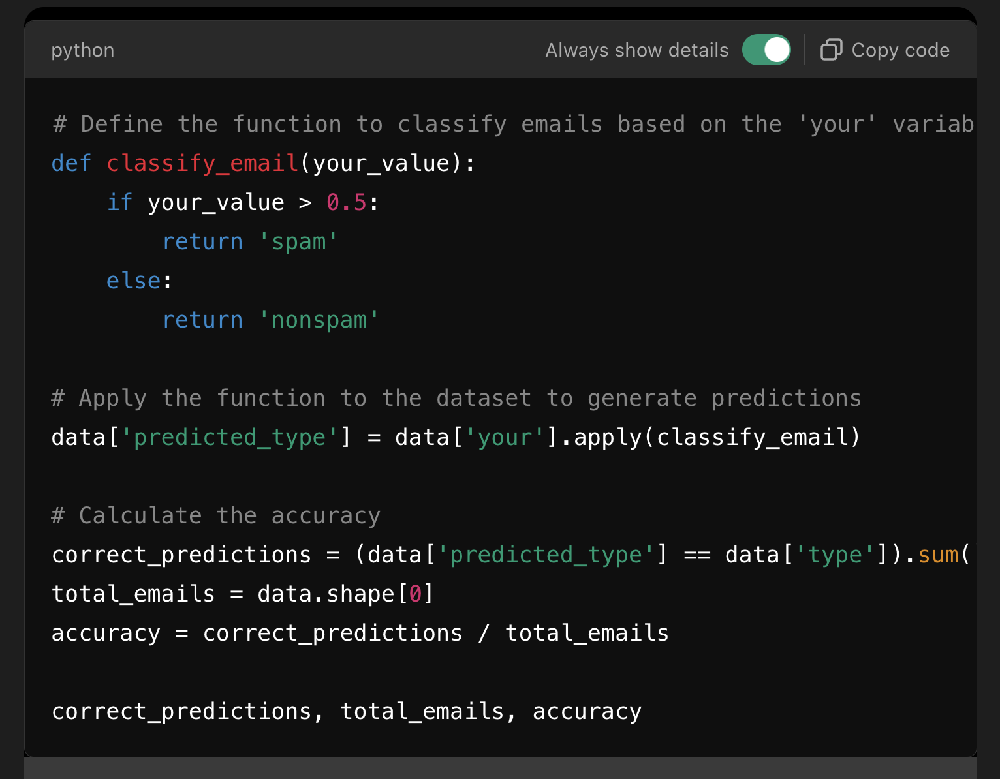
AI 为这个任务写的代码：定义规则 → 应用到数据 → 计算准确率
AI 4.0 的能力
工具使用 语言模型调用代码解释器 ，结果来自真实计算，可复核。
对你意味着什么
门槛从“会写”变成“会问” 会不会 R / Python，不再是最大的障碍；能不能提出对的问题、判断结果 才是。
风险
它也会做错 所以 Step 9 更重要：用已知答案去校验 （比如这里的 75.14%）。
参考 原 PPT P43；回顾 L1「4.0 的关键能力：上下文学习、思维链、指令学习、工具使用」
PART 2 · 2.4 · 2026 更新
AI 能做大半个“建模”，问题与判断 仍在人手里
MLE-BENCH · 75 个 KAGGLE 竞赛
榜首 agent 的获奖牌比例（自报，2026-02）。榜单自 2026-04 起暂停收新提交。
DRIVENDATA · 24 小时，同一提示
Claude Code 与 Codex 在表格类竞赛 Flu Shot Learning 的排名（89th / 87th 百分位）。
DSAGENTBENCH · 275 个端到端任务
最强 agent 的任务成功率；开源模型均低于 1%（EMNLP 2026）。
■ 人主导 ■ AI 可代劳 ■ 人 + AI 协作 十二步 · 课堂判断
参考 R4 MLE-bench（⚠ 榜单自报，口径为奖牌比例）；R5 DrivenData 2026；R6 DSAgentBench（EMNLP 2026）。“十二步分工”为课堂判断，非实证结论
PART 2 · 小结
一件事，三个时代 的做法
AI 1.0 · 人写规则
your > 0.5 人看图、人定阈值。准确率 75.1% 。
AI 2.0 · 机器学规则
树 / 回归 / 森林 数据自己找规则。留出集准确率 88–96% 。（L4–L5）
AI 4.0 · 助手做全流程
对话 + 代码解释器 十二步里大半能代劳 ，人负责问题与判断。（L7）
不变的 定义问题 → 数据 → 检验 → 交付，这条过程 没变
变化的 每一步的成本 ：从几周，到几分钟
参考 本讲 2.1–2.4
LECTURE 3 · 人工智能产业实践
03
PART 3
数据科学社区与延伸阅读
工具、开源社区、两本必读书——把手艺做到可信
3.1 工具：R → Python → AI 写代码
3.2 社区：统计之都与中国 R 会议
3.3 延伸阅读与课后练习
PART 3 · 3.1 工具
R 的起源：统计学家的 工具
Ross Ihaka · Robert Gentleman
S 语言 · 约 1976
AT&T 贝尔实验室 用于数据探索、统计分析、作图 的解释型语言。
S-PLUS
商业化实现 基于 S 语言的商业软件，由 MathSoft 完善。
R · 约 1993
Auckland 大学 · 开源 Gentleman 与 Ihaka 及志愿者开发，与 S-PLUS 有一定兼容性 。
参考 原 PPT P49（备注文字）；⚠ 年份据公开资料补注（S 约 1976、R 约 1993），请以原始文献为准
PART 3 · 3.1 工具
工具会变，过程不变
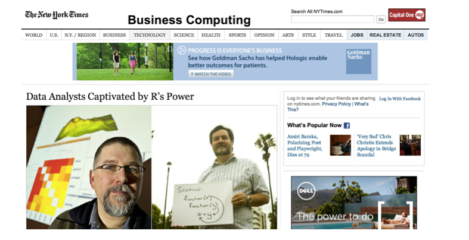
纽约时报 · “Data Analysts Captivated by R’s Power” 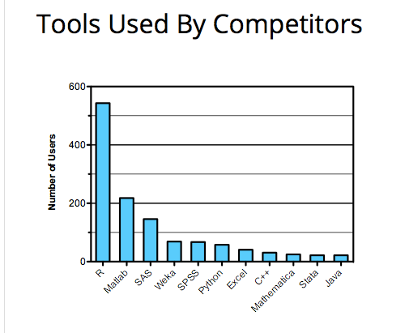
约 2015 年 Kaggle 参赛者工具：R 第一 57.9%
2025 年开发者调查中使用 Python 的比例，一年上升 7 个百分点；学习编程者中为 71.8%
2000s–2010s
R 时代 统计与可视化，学术界先行
2015–2024
Python 时代 机器学习与深度学习的通用语言
2025 →
AI 写代码 语言不再是门槛；十二步 依然是
参考 原 PPT P48、P50–P51；R3 Stack Overflow Developer Survey 2025（⚠ 两张图口径不同：Kaggle 参赛者 vs 全体开发者，仅作趋势参照）
PART 3 · 3.2 社区
数据科学是一门社区 驱动的手艺
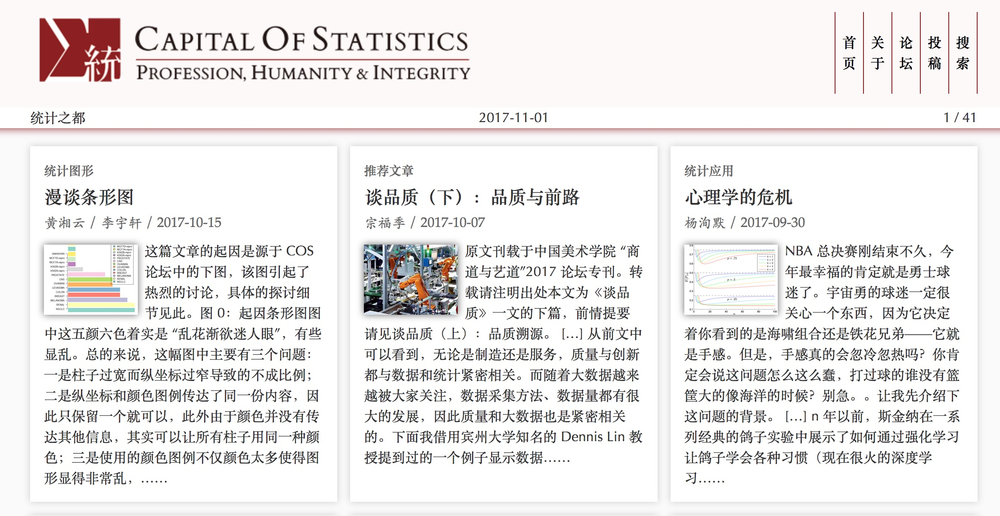
统计之都（Capital of Statistics, COS）· 中国数据科学的民间社区 2025 X 智能大会 · 第 18 届中国 R 会议（2025.10.17–19，北京）
论坛 · 文章 统计图形、数据质量、统计应用——开放讨论
年度大会 从 R 会议到 X-AGI ：话题随 AI 一同扩展
参考 原 PPT P45–P46、P53–P55；主讲人曾任 COS 编辑部编辑（原 PPT P54）
PART 3 · 3.3 延伸阅读
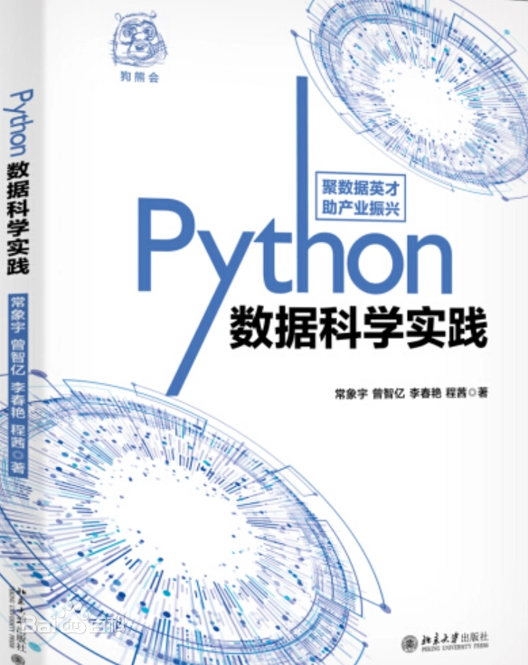
《Python 数据科学实践》
常象宇、曾智亿、李春艳、程茜 著
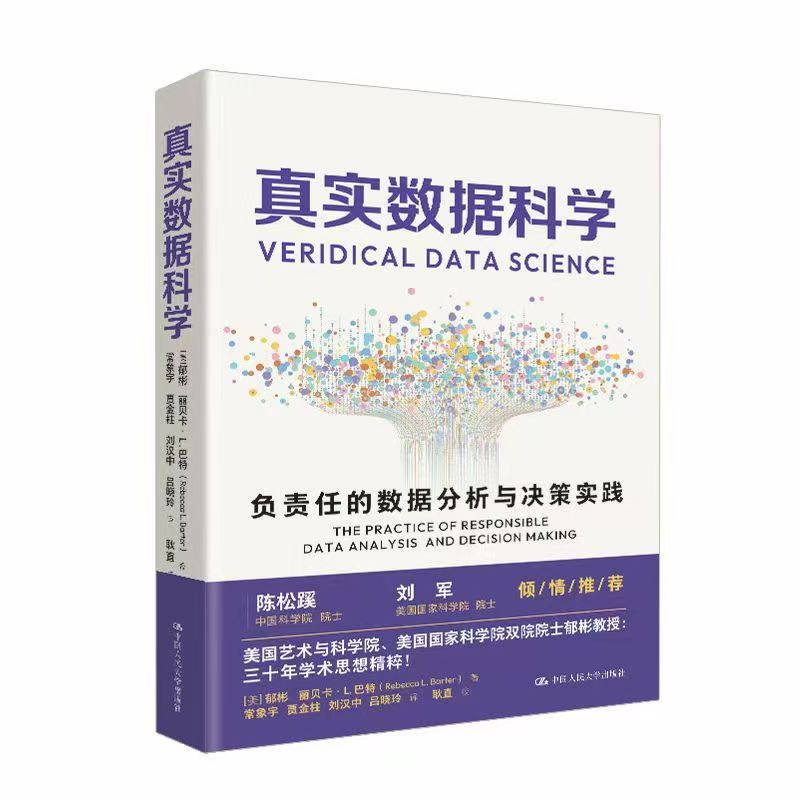
《真实数据科学》
Veridical Data Science
参考 原 PPT P56；《真实数据科学》的关注点：负责任的数据分析与决策——对应十二步中的 Step 9「挑战结果」
LECTURE 3 · 课后练习
课后：自己走一遍
01 复现 下载 UCI Spambase，让你的 AI 助手完成十二步的第 4–8 步。核对：your > 0.5 的准确率是否为 75.14%（3457 / 4601） ？
02 改规则 换成“!”或“$”，找出你认为最合适的阈值；说明你更怕误杀还是漏网 ，为什么。
03 找出身 在你的行业里，找一个“数据有出身”的例子：哪个结论换个环境就不成立 ？
04 改写问题 写一个你工作中的业务问题，把它改写成“可以被计算”的问题 ，并写出需要的数据。
提示 练习 01 的数据：archive.ics.uci.edu/dataset/94/spambase；在 R 里是 kernlab 包的 spam
LECTURE 3 · 数据科学与 AI 1.0
THANK YOU
谢谢 大家
问题与讨论
常象宇
西安交通大学 管理学院xiangyuchang@xjtu.edu.cn
参考 原 PPT P64
LECTURE 3 · 参考文献
参考文献 References
R1 U.S. BLS, The Economics Daily, “Artificial intelligence, information technology, and employment, 2024–34”, 2026-07-16. bls.gov/opub/ted/2026/
R2 U.S. BLS, Occupational Outlook Handbook: Data Scientists（2025–35 年增长 35%）. bls.gov/ooh/math/data-scientists.htm
R3 Stack Overflow, 2025 Developer Survey（Python 57.9%，+7pp）. survey.stackoverflow.co/2025/
R4 OpenAI, MLE-bench（75 个 Kaggle 竞赛；榜单 2026-04 起暂停收新提交）. github.com/openai/MLE-bench
R12 Google Cloud Blog, “Welcome Kaggle to Google Cloud”, 2017-03-08. cloud.google.com/blog/products/gcp/welcome-kaggle-to-google-cloud
R5 DrivenData, “AI Agents in Data Science Competitions: Lessons from the Leaderboard”, 2026. blog.drivendata.org
R6 DSAgentBench: Can Agents Automate End-to-End Data-Science Workflows in Real Computer Environments? EMNLP 2026. aclanthology.org/2026.emnlp-main.107/
R7 国家数据局，《专家话两会：以改革攻坚加速数据价值释放》，2026-03-12. nda.gov.cn
R8 国家数据局，《全国数据资源调查报告（2025年）》. nda.gov.cn
R9 刘烈宏，《深入推进数字中国建设》（“十五五”规划纲要辅导读本），国家数据局，2026-04-14. nda.gov.cn
R10 中国金融信息网，《2024 年上市公司数据资产盘点》，2025-05-09. cnfin.com
R11 Hopkins, Reeber, Forman, Suermondt (1999). Spambase. UCI Machine Learning Repository, HP Labs. archive.ics.uci.edu/dataset/94/spambase 本讲所有准确率均为本讲复算。
原 PPT Materials/Lecture_3_ds.pptx（P1–P64）
⚠ 标注页面含：口径不一的榜单、公开信息补注的年份、或课堂判断，引用前请核对原文。
说明 调研截至 2026-11-14；页面底部的 R# 对应此处编号